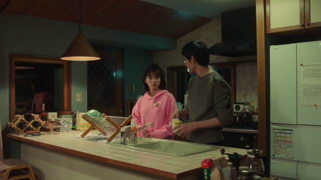
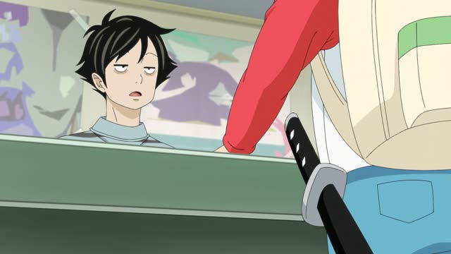
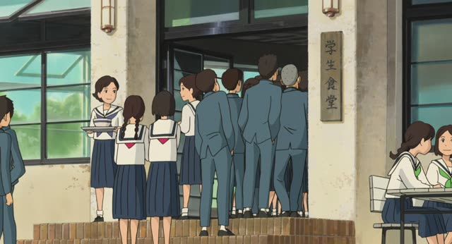
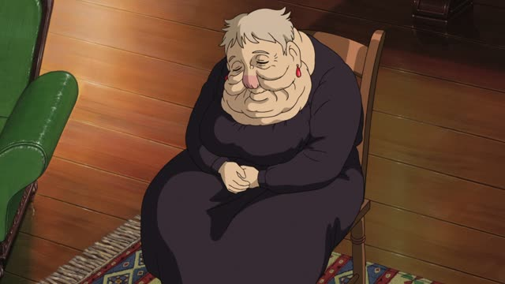

～てある
| Polite | ～てあります |
|---|---|
| Casual | ～てある |
Same meaning: "someone did it, and it's still that way". Only the politeness changes.

Quartet · Episode 2
アイスも買ってあります。４人分。
"I've got ice cream too. Enough for four."
～てある means "it has been done (on purpose), and it's still that way". て-form + ある: 買ってある, 書いてある.
On this card, Beppu proudly says the ice cream is already bought, waiting in the freezer. あります makes it polite.
The most common one: 書いてある, "it says (in writing)".
Shirokuma Cafe · Episode 10
持ち込みはダメだって書いてあるよ。
"It says outside food isn't allowed."
On this card, Panda spots the sign. 書いてある: someone wrote it, and there it is.
Quick Examples
Looking at a sign.
ここに「禁煙」と書いてあります。
"It says No Smoking here."
PoliteYour friend asks about dinner.
もう材料は買ってあるよ。
"I've already bought the ingredients."
Done earlier, ready now.
CasualA host welcomes you.
お部屋は暖めてあります。
"The room has been warmed up for you."
PoliteYour roommate looks for keys.
鍵なら、机の上に置いてあるよ。
"The keys are on the desk."
Someone put them there.
CasualWith and without
窓が開いている。
"The window is open." Maybe the wind did it.
窓が開けてある。
"The window has been left open." Someone did it on purpose.
Examples from Media
Oishinbo · Episode 36
表に車を待たせてありますので、どうぞ。
"I have a car waiting out front, please."
Death Note · Episode 10
はい、全て話してあります。
"Yes, I've told him everything."

Kotaro Lives Alone · Episode 5
結構面白い物置いてあるんですよ。
"We have some fun stuff lying around."
Good Morning Call · Episode 8
えーっと、あっ、“北へ向かえ”って書いてある。
"Um, oh, it says 'head north'."
Dungeon Meshi · Episode 3
味まで書いてあるものはなかったな。
"None of them said what it tastes like."

From Up on Poppy Hill
あのテーブルとってあるから。
"I've saved that table."
Howl's Moving Castle
おまけに、人には喋れなくしてあるね。
"And on top of that, it's been made so you can't tell anyone."
About the curse on Sophie.

Howl's Moving Castle
車を待たせてあるの。
"I've got a car waiting."